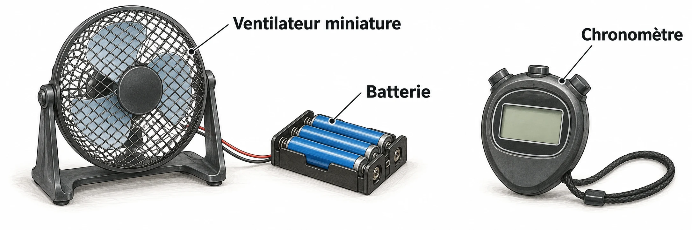

OBSERVER · EXPÉRIMENTER · EXPLIQUER
Le ventilateur et sa chaîne d’énergie
Change l’interrupteur et la courroie. Distingue ce que fait le moteur de ce que fait l’hélice.

✎ Garde ta feuille à côté de toi.Ordinateur : manipulations et mesures simulées. Papier : relevés, réponses, calculs et croquis. Matériel réel : essai complémentaire si disponible.
Des observations pour expliquer
- Q1–Q3 : dessine les chaînes et les conversions sur papier.
- Q4–Q5 : relève les observations qui appuient ton hypothèse de panne.
Appuie ton explication sur une valeur, un changement observé ou une comparaison. Distingue ce que montre le modèle et ce qui reste à vérifier.